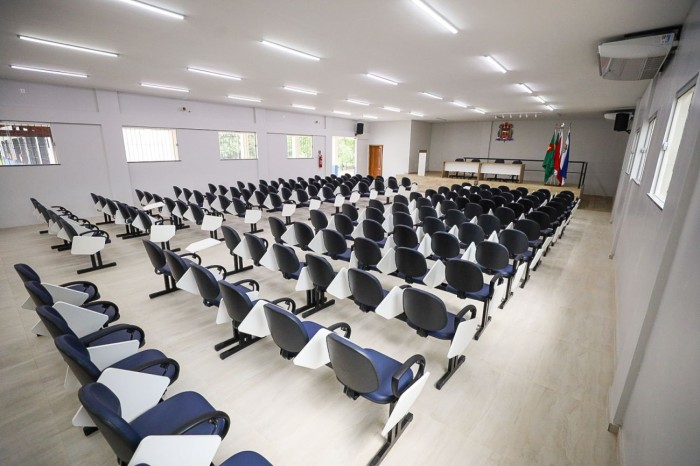

Quem Somos
A ONG Natureza Viva é uma organização comprometida com o desenvolvimento sustentável e comunitário. Contamos com espaços modernos, como o auditório e o salão de festas, disponibilizados para eventos e atividades diversas. Nosso objetivo é proporcionar ambientes de qualidade para a comunidade.
Sobre o Sistema
Este sistema foi desenvolvido para facilitar o gerenciamento do nosso auditório da ONG, permitindo:
- Reservas de horários no auditório;
- Confirmações de reservas pelo administrador;
- Consultas de agendamentos por espaço ou período;
- Gestão de ocorrências e avaliações após uso dos espaços.
Acesse Agora
Faça o login ou cadastre-se para reservar os espaços e contribuir com a nossa causa.
Acessar Sistema